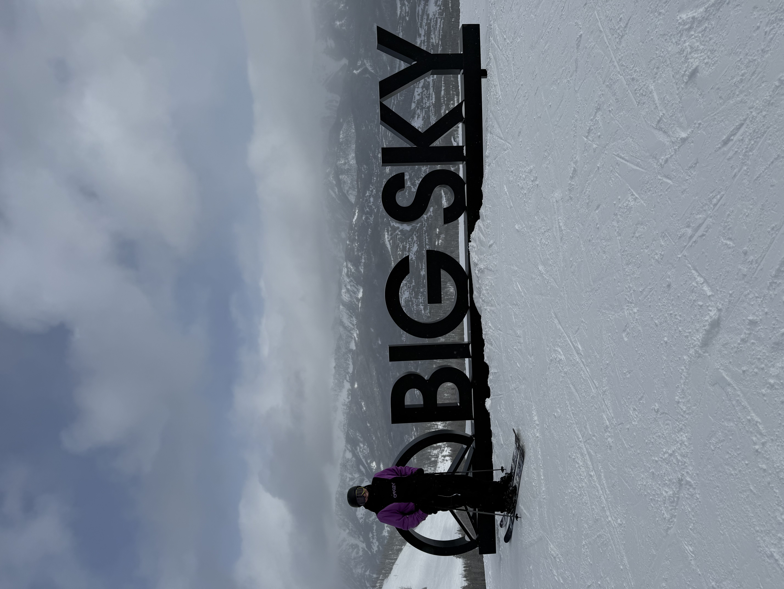

Why I Ski
To the Good Stuff Skiing is a hobby that I have grown to love. It is such a fun and exciting hobby, the wind rushing through my hair, trees wizzing by the sides. Due to my involvement in this wonderful hobby I have had many opportunities; working on mountain as a ski tech, traveling the country and having many different experiences nationwide, and spending lots of good quality time with friends and family.
On top of all that there are numerous health benefits that come with skiing. It is the ultimate escape from reality, a blend of adrenaline and peace that gets the heart racing and the soul soaring. Physically, there’s nothing quite like carving through fresh powder. Every turn works your legs, core, and even those small stabilizer muscles you never knew existed. Whether you're bombing down a black diamond or cruising on a mellow green, skiing is a full-body workout that builds strength, balance, and flexibility without you even realizing it. And the best part? It burns serious calories while feeling more like play than exercise, which is why I keep coming back for more. The crisp mountain air fills your lungs and with every descent, you feel your body come alive—pulsing with the kind of energy you can only get from being outdoors in the snow.
But skiing isn’t just about the physical perks. Emotionally, it’s pure magic. There’s something about being on the mountain that clears the mind and resets your spirit. It’s a kind of mental cleanse you can’t find anywhere else. The quiet after a fresh snowfall, the rush of the wind as you carve down a slope—each moment is a reminder to be present and let go of everything else. You leave the mountain feeling lighter, like all the stress and worries melted away with every turn. Whether you're with friends or flying solo, skiing connects you to something bigger—nature, freedom, and that unshakeable feeling that you’re exactly where you’re supposed to be.
My Favorite Resorts
In this section I would just like to show my top five favorite skiing destinations and a few reasons why I enjoy skiing there.
- Big Sky - Montana
- So Many options due to size of the mountain
- Super fun culture! live djs and lots of activities at the lodge
- Snowbird - Utah
- Extreme terrain catered to expert skiers
- Incredible views and terrains
- Super accessible
- Sun Valley - Idaho
- Long runs that cut lift times down
- Beautiful views and super kind people
- Located close to some very charming and fun ski towns in central Idaho
- So Many options due to size of the mountain
- Super fun culture! live djs and lots of activities at the lodge
- Extreme terrain catered to expert skiers
- Incredible views and terrains
- Super accessible
- Long runs that cut lift times down
- Beautiful views and super kind people
- Located close to some very charming and fun ski towns in central Idaho